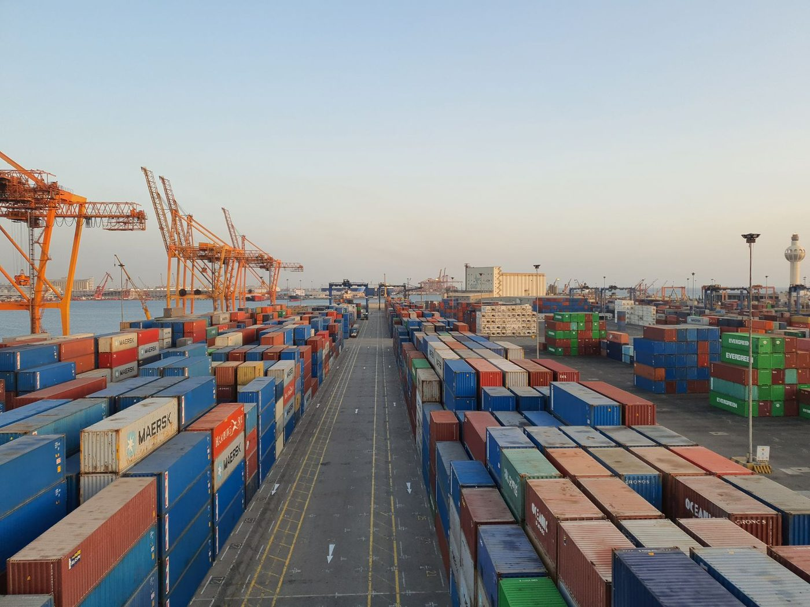
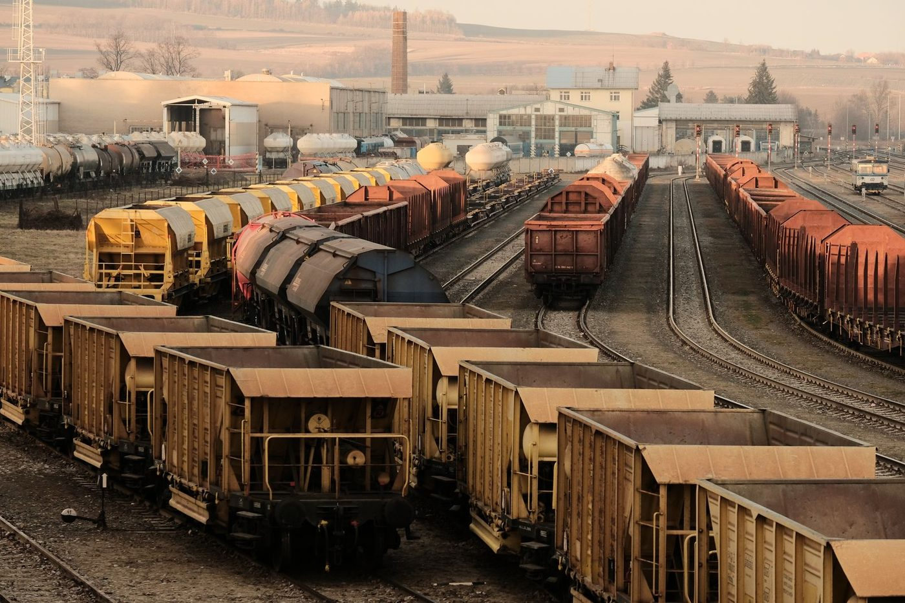
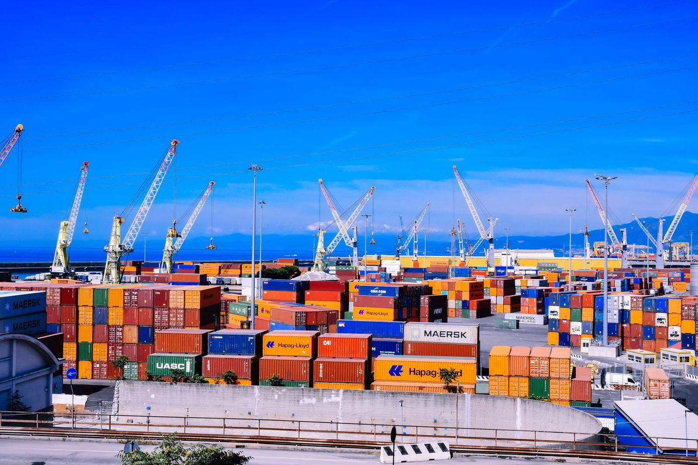
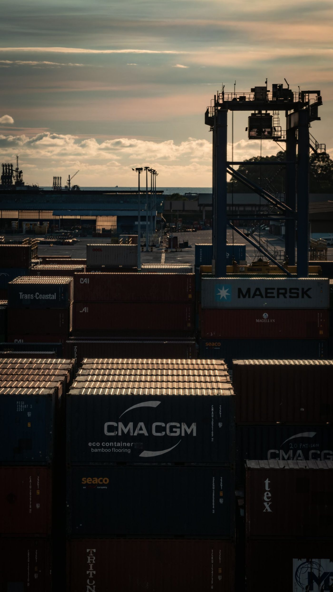
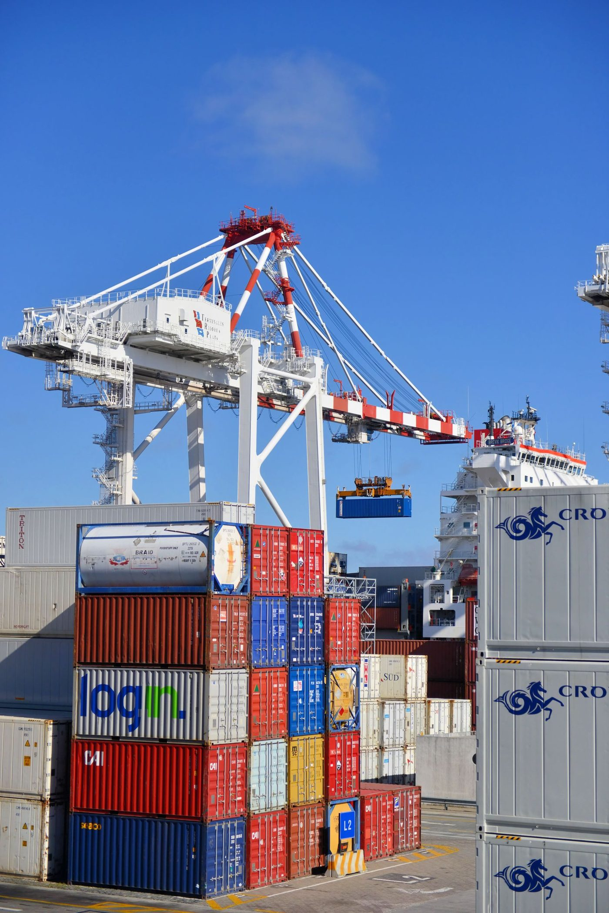
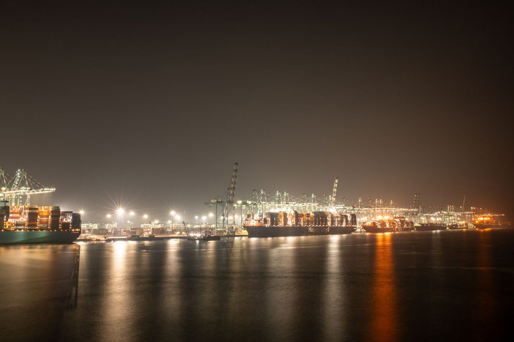
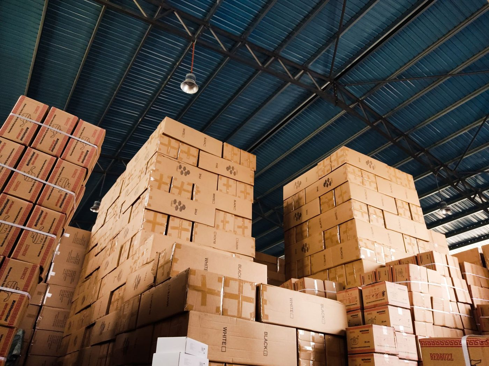

从一只集装箱出发
看中国如何在高水平对外开放中
从贸易大国走向贸易强国
凌晨四点，洋山港四期的岸桥还在作业。一只印着白色船公司标志的蓝色集装箱被吊起、平移、落下，稳稳压上货轮。它可能来自义乌的小商品市场，也可能装着苏州产的工业机器人。十几个小时后，它将穿过马六甲海峡，出现在鹿特丹的货架上。
这样的场景，中国每天都在重复上万次。一只集装箱的重量，称得出一个国家的开放程度。
公元前 138 年，张骞出使西域。驼队驮着丝绸和漆器，沿河西走廊一路向西。那时的"开放"，是驼铃、是沙暴、是用脚一步步量出来的信任。
两千多年后，驼队换成了"钢铁驼队"。中欧班列累计开行已突破十万列，把义乌的小商品、重庆的笔记本电脑、合肥的光伏组件，送到欧洲两百多座城市。从驼铃到汽笛，从丝绸之路到"一带一路"，中国人对"开放"的理解其实一直没变——
开放不是把自己的东西送出去，而是把别人的需要接进来。

世贸组织总干事伊维拉说过一句话：贸易不是零和游戏，它是把蛋糕做大的唯一办法。这句话，中国用四十多年验证了一遍。
从"世界工厂"到"世界市场"，这条路，中国走了不到半个世纪。
但 2025、2026 这两年，海面并不平静。单边主义抬头，保护主义筑墙，关税战一轮接着一轮。有人喊"脱钩"，有人喊"去风险"，全球贸易增速被一次次下调。
在这样的背景下，中国外贸交出的答卷是——
2026 年上半年，进出口 25.47 万亿元，历史同期首次站上 25 万亿台阶；前三季度刚过，前 10 个月就已经冲到 44.81 万亿元。海关总署用八个字总结："增势强劲、走势稳健。"
为什么能？答案藏在结构里。

2025 年，中国高技术产品出口 5.25 万亿元，同比增长 13.2%，拉动出口增长 2.4 个百分点。其中，专用装备、高端机床、工业机器人出口分别增长 20.6%、21.5% 和 48.7%——工业机器人出口首次超过进口，中国成为工业机器人的净出口国。锂电池、风力发电机组出口分别增长 26.2%、48.7%。
这已经不是"低价倾销"能解释的事了。当一台"沙漠空调"能在室外 60 摄氏度以上正常工作，当中国陶瓷把传统纹样和海外节日审美缝在一起，卖出去的就不只是商品，而是解决问题的能力。
商务部的原话是"顶压增长、亮点纷呈"。我更愿意把它翻译成一句大白话：风浪越大，越看得出船的结构。
如果说前四十年，中国外贸的关键词是"卖出去"，那现在的关键词，正在变成"连起来"。
2025 年，中国与共建"一带一路"国家货物贸易额 23.6 万亿元，占外贸总值的 51.9%——已经超过一半；对共建国家非金融类直接投资 2833.6 亿元，增长 18%。同年，服务进出口首次突破 8 万亿元，其中服务出口增长 14.2%；新设外资企业 7 万余家，增长 19.1%。

数字背后是具体的画面：印尼雅万高铁上，时速 350 公里的列车穿过稻田；希腊比雷埃夫斯的码头，中国投资的岸桥把集装箱从船上卸下；一个义乌老板娘，用手机直播把圣诞饰品卖给里约热内卢的家庭。
开放共赢不是一句口号。它是别人的铁路、别人的港口、别人的货架，也是我们的订单、我们的就业、我们的税收。

还有一组容易被忽略的数字：有进出口记录的经营主体超过 78 万家，民营企业占外贸总额的比重升到 57.3%。外贸早就不是少数大企业的游戏了——它是一家镇上的五金厂、一个县城里的圣诞树作坊、一群在跨境直播间里熬夜的年轻人。
很多人只盯着出口，但真正的贸易强国，进口能力同样重要。
2025 年，中国进口规模创历史新高，连续 17 年稳居全球第二大进口市场。从二季度开始，进口连续三个季度保持增长，12 月增速进一步加快到 4.4%。进博会一届接一届地办，广交会一年两季从不断档。
"不仅愿做'世界工厂'，更愿做'世界市场'。"这句话，是商务部对外贸易司司长在 2026 年初说的。对中国普通人来说，它意味着智利的车厘子、新西兰的牛奶、日本的药妆，能更快更便宜地出现在你家楼下的超市。
开放的红利，最后都会落到具体的货架上。

从"贸易大国"到"贸易强国"，一字之差，差在三个地方。
过去是降关税、开市场；现在是规则、规制、管理、标准与国际接轨。2025 年，中国—东盟自贸区 3.0 版升级议定书签署，把数字经济、绿色经济、供应链、标准合作都装了进去；RCEP 持续实施，原产地累积规则让区域内的产业链咬得更紧。
货物贸易、服务贸易、数字贸易三条腿走路。2025 年货物和服务净出口对经济增长的贡献率达到 32.7%，服务出口增长 14.2%，数字贸易的标准和示范区的建设也在同步推进。
市场更分散——对共建"一带一路"国家进出口占比过半；主体更多元——78 万家经营主体、民营企业占 57.3%。鸡蛋没有放在一个篮子里，这才是"韧性"两个字的真实含义。

而作为一名财会专业的学生，我看到的"强贸兴邦"是另外一组词：关税税则、出口退税、跨境人民币结算、汇率避险、RCEP 原产地规则下的成本核算。
一家做出口的中小企业能不能活下来，很多时候取决于财务能不能把一笔订单的关税成本算准、把汇率风险锁住、把退税的时间差扛过去。贸易强国的底座，是无数个算得清账的企业。这一点，课本上的分录和港口里的集装箱，说的是同一件事。
一只集装箱从洋山港出发，要经过岸桥司机、报关员、船代、货代、保险、银行、税务……几十个环节、上百个人。
"开放共赢 强贸兴邦"这八个字，最后都落在这一个个具体的人手上。
风浪还会来。但只要码头上的灯还亮着，船就会一艘接一艘地靠岸。